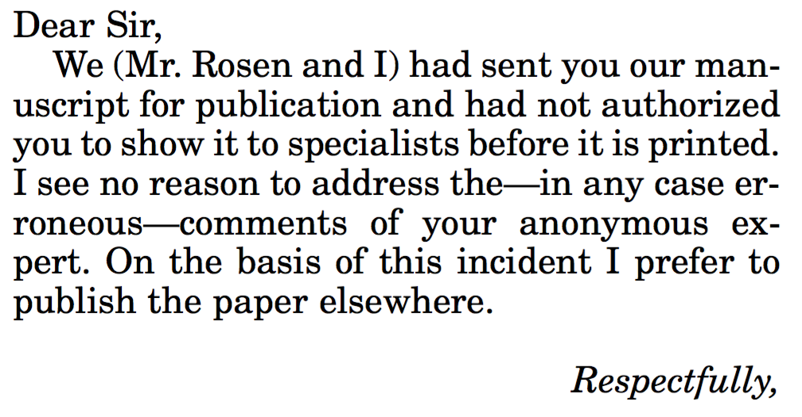
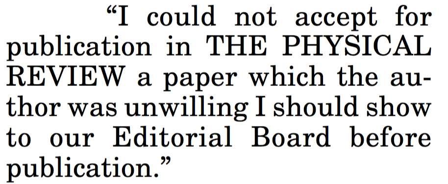
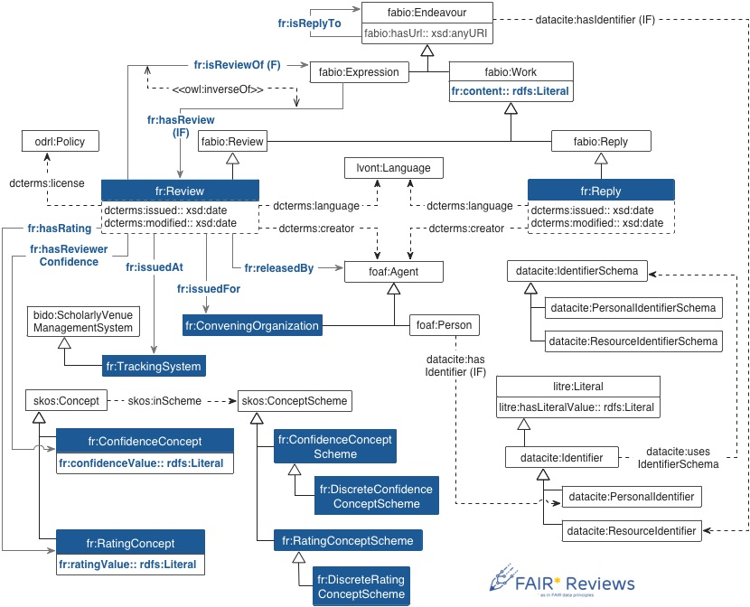
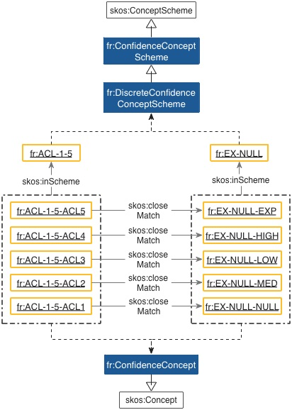
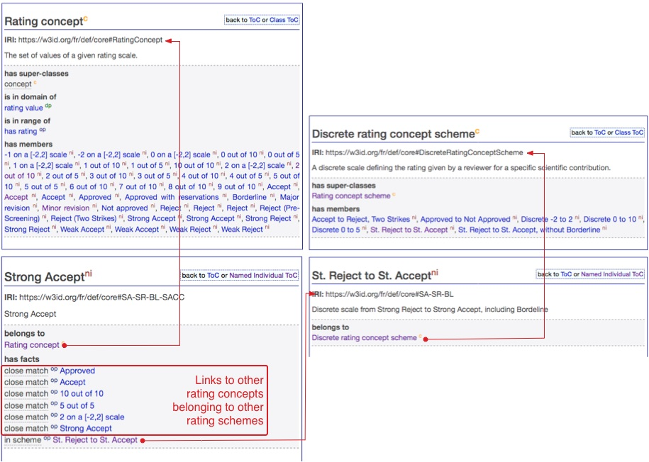
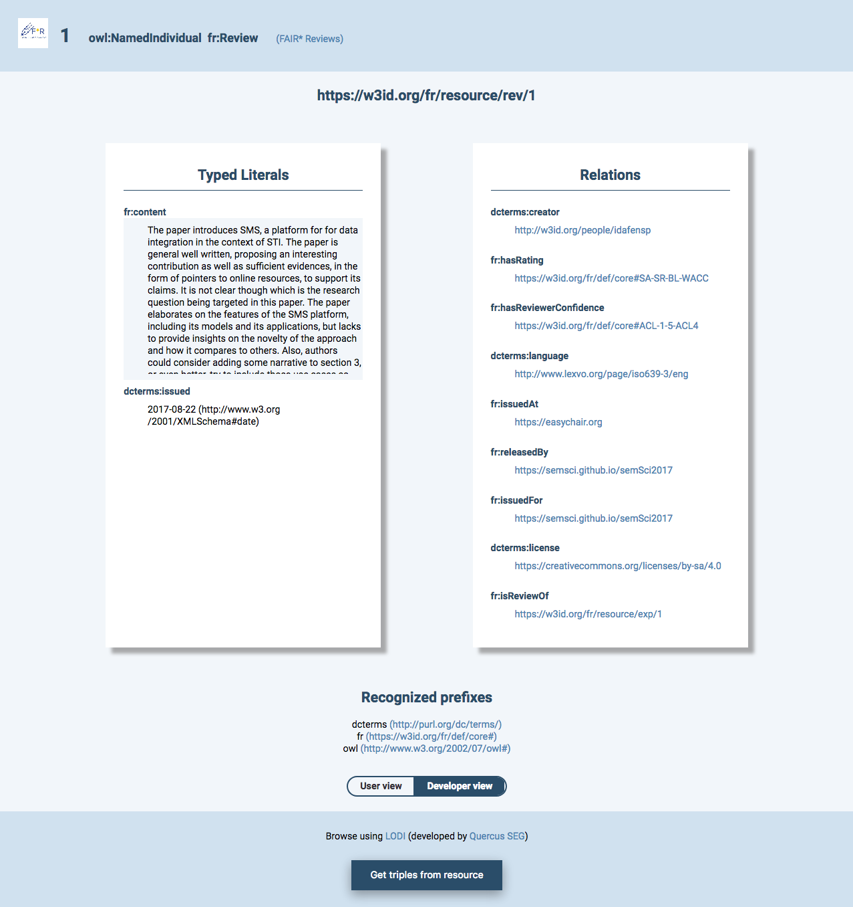
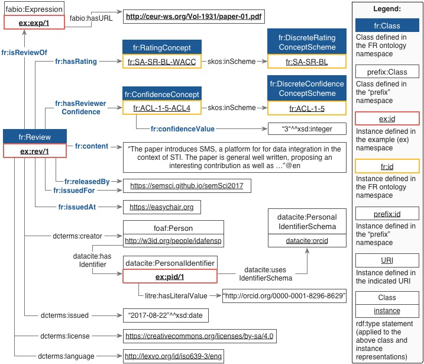
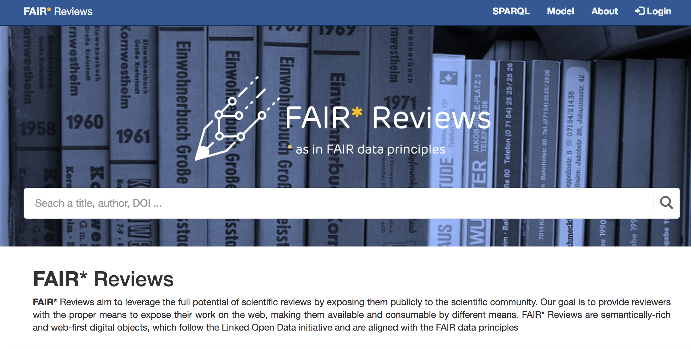

Scientific Reviews as Linked Data
isantana@fi.upm.es 0000-0001-8296-8629 @idafensp
mpoveda@fi.upm.es 0000-0003-3587-0367 @MariaPovedaV
Ontology Engineering Group - Universidad Politécnica de Madrid
What is a review?
What is a review?
- Outcome of the review process
- Cornerstone of the scientific process... "lately"
- Assess the validity of a contribution
- But not only that…
- Novelty
- Relevance
- Quality
- Sutiability for publication
Not everyone liked it...
Not everyone liked it...
Einstein Versus the Physical Review 10.1063/1.2117822
It is not a perfect system…
- We produce millions of reviews
- The process is mostly closed
- Open Review
- Trust
- Accountability
- What happens to reviews afterwards?

Our goal
- Expose the knowledge of a scientific review
- An study conducted by an expert in the topic
- Open Reviews as Linked Data
- General-purpose model
- Allows specialization
- Structure the review and its contents
FAIR* Reviews
- An ontology and a platform for publishing scientific reviews as Linked Data
- FAIR as in FAIR Data Principles
- We are inspired by FDP
- Findable: URIs
- Accessible: public metadata
- Interoperable: standard vocabularies
- Reusable: public license
The name
- We know is controversial...
- FAIRification
- Open ≠ FAIR ≠ fair
- It is catchy
- We already have the logo...
The FAIR* Reviews Ontology
SKOS modelling - Confidence
SKOS modelling - Rating
HTML published review
RDF for the published review
The FAIR* Reviews Platform
- Linked Data publishers for reviews
- Following some criteria
- ORCID login for reviewers
- ORCID review workflow
- Valid DOI for papers
- Valid conference URL/URI
- Reconcile with OpenCitations
- Support for LD generation without publishing it
The FAIR* Reviews Platform
(Private) Beta version
The FAIR* Reviews Platform
Doesn't work yet...
Stay tunned
Outreach: the good
- PreReview
- prereview.org
- Journal club for pre-print papers
- reviews when they are useful
- Biology domain
- Willing to do something together
- Many links: OpenCon & Mozilla
Outreach: the better
- SPAR ontologies: there we go!
- sparontologies.net
- Ontologies for describing the main aspects of publishing domain
- Community adoption, broadly used
- Many changes... rules about modelling, domain, ranges, move skos to another module (BIDO)
- Soon we will be part of the SPAR family
Next Steps
- Specilize reviews
- Subclasses
- Structured reviews, classifying content
- Finish with the FR2SPAR migration
- Move SKOS to BiDO
- Follow the SPAR guidelines
- Community engagement
Open opportunities
- What would you do if you have structured reviews available?
- Would you open your reviews?
- Would you implement this approach in your events? Contact us in that case...
- Any other comment/feedback/doubt/suggestion/big applause?
Scientific Reviews as Linked Data
isantana@fi.upm.es 0000-0001-8296-8629 @idafensp
mpoveda@fi.upm.es 0000-0003-3587-0367 @MariaPovedaV
Ontology Engineering Group - Universidad Politécnica de Madrid